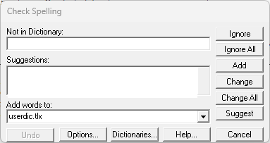
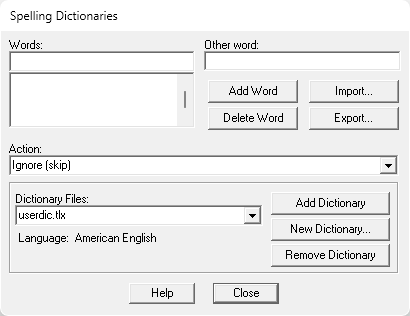

This command can also be executed from the SI Editor's Toolbar.
The Spelling Dictionaries window will be accessible by clicking the Dictionaries button when performing a Spell Check, when a misspelled word is detected.

The Spelling Dictionaries window allows you to select user dictionaries and edit their contents by adding or removing words. You can also access your Dictionary Files through this window.

Words
- Words - Contains the list of words in the currently selected user dictionary.
- Other word - Contains an alternate word associated with the currently selected word. The Other word is used in the Auto correct and Conditionally change actions to supply a replacement word. You can enter more than one word in the Other word field, but the total length should be limited to 63 characters.
- Add Word button - Typing a word into the Words field and adding it will include it in the currently selected dictionary list, along with its chosen Action and Other word. To modify the Action or Other word of an existing entry, use the Add Word button. While most characters are allowed, only words with internal periods should end with a period (e.g., "U.S.A." is acceptable, but "USA." is not).
- Delete Word button - Causes the word appearing in the edit area of the Words list to be removed from the currently selected dictionary. The associated Action and Other word are also removed.
- Import button - Adds the words contained within a text file to the currently selected dictionary. Clicking the Import button displays a window that allows for the selection of the text file to be imported. Each word in the selected file is loaded into the dictionary. Note that importing a large list of words may take some time.
- Export button - Saves the contents of the currently selected dictionary to a text file. Clicking the Export button displays the Export Dictionary window for specifying the location and name of the text file for exporting the dictionary words. The words are written to the file one per line.
Action
The Action drop-down menu is used to select an action that is associated with words in the dictionary. The action tells the Spell Check what to do when it finds a word in the dictionary. The following actions can be selected:
- Auto change (use case of other word) - This feature automatically replaces a specific word with another, maintaining the case of the replacement word. It's useful for expanding abbreviations; for example, "TBD" can be automatically changed to "to be determined". This automatic replacement only works if the Auto correct option is enabled in the Options window.
- Auto change (use case of checked word) - This action automatically replaces one word with another. For example, if you often type "recieve" instead of "receive", you might enter the word "recieve" with "receive" as the other word and Auto change (use case of checked word) as the action. If "recieve" was capitalized, the Spell Check would ask if you wanted to replace it with "Receive".
The Spell Checker will automatically correct "recieve" wherever it appears. Note that the replacement is made automatically only if the Auto correct option is enabled (refer to the Spell Check Options for information on the Auto correct option).
- Conditionally change (use case of other word) - This action allows for the optional substitution of a specific word with an alternative word when entered in the Other word field, ensuring that the case of the replacement word is preserved. It's useful for expanding abbreviations; for example, "TBD" can be changed to "to be determined". This replacement only works if the Auto correct option is enabled in the Options window.
- Conditionally change (use case of checked word) - This action optionally replaces one word with another, ensuring that the case of the original word is preserved. For example, if you frequently misspell "recieve" as "receive", you might enter the word "receive" as the Other word.
- Ignore (skip) - This action tells the Spell Check that the word is spelled correctly, and can be skipped over. This is the most common action.
- Exclude (treat as misspelled) - This action flags a word as always misspelled, even if it's in another dictionary. These words will never be suggested and will always be reported as errors. Remember, the order of user dictionaries in the Dictionary Files list matters for lookup; to exclude a word, ensure it's not in an earlier dictionary.
Dictionary Files
- Add Dictionary button - Opens a user dictionary file. When you click the Add Dictionary button, a window appears that can be used to navigate to a dictionary (.tlx) file to open. The set of open dictionary files is remembered, so once you add a dictionary file, you don't need to add it again. These dictionary (.tlx) files are typically stored in the user's AppData > Roaming > SpecsIntact > Spell folder.
If you need to create a new user dictionary, use the New Dictionary button. You can open other applications' dictionary files.
- New Dictionary button - Creates a new user dictionary. When the New Dictionary button is clicked, a window will appear to specify the File Name and Language of the new dictionary, or you click the Browse button to create a new dictionary. It is recommended to keep the dictionary (.tlx) files in the user's AppData > Roaming > SpecsIntact > Spell folder.
- File Name - Displays a window that shows the names of other user dictionary files. Use the window to view the names of existing dictionary files and to enter the name of the new dictionary file.
- Language - Specifies the language (e.g., French, American English) of the words the new user dictionary will contain. If the language you want to use is not listed, select Any.
- Browse - Contains the name of the file used to hold the contents of the new dictionary. You can enter a name here or use the Browse button to display a window showing the names of other dictionary files.
- Remove Dictionary button - Closes the currently selected dictionary file. Closed dictionaries are not checked during a spell check. Although the file is closed, it is not deleted. Closed dictionary files can be later reopened using the Add Dictionary button.
Standard Windows Commands
The Help button will open the Help Topic for this window.
The Close button will close the window.
Users are encouraged to visit the SpecsIntact Website's Support & Help Center for access to all of our User Tools, including Web-Based Help (containing Troubleshooting, Frequently Asked Questions (FAQs), Technical Notes, and Known Problems), eLearning Modules (video tutorials), and printable Guides.